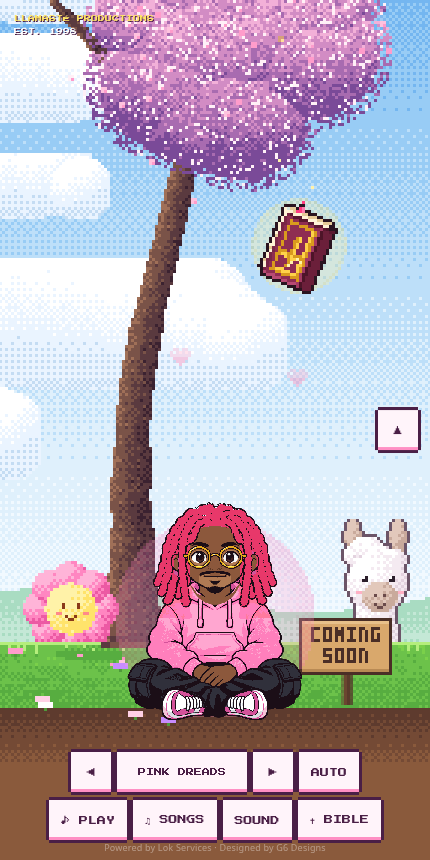
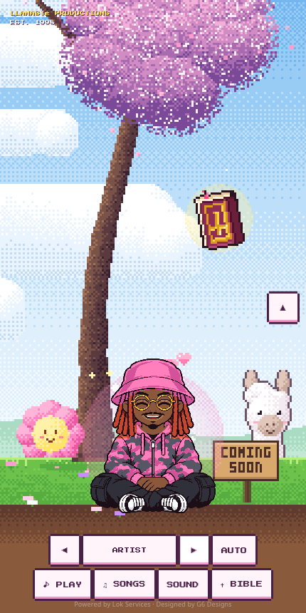
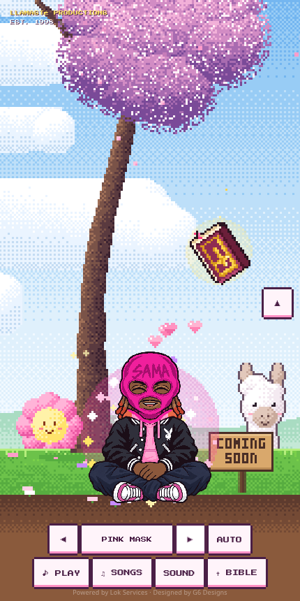
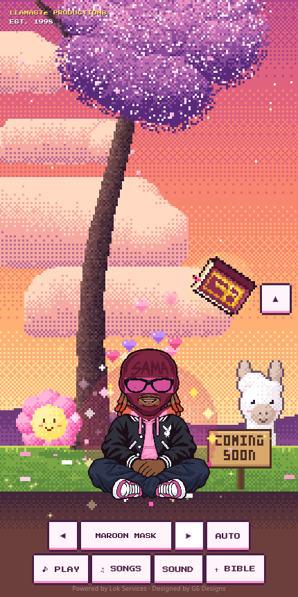
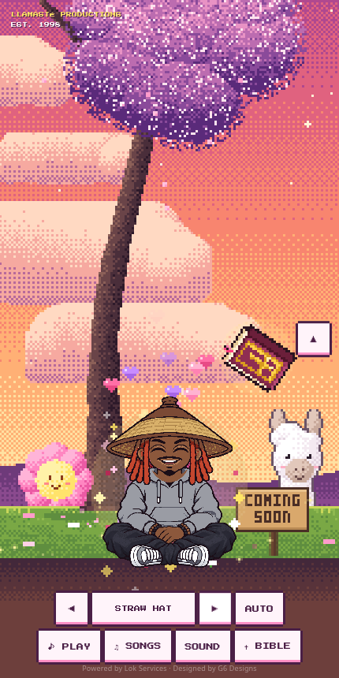
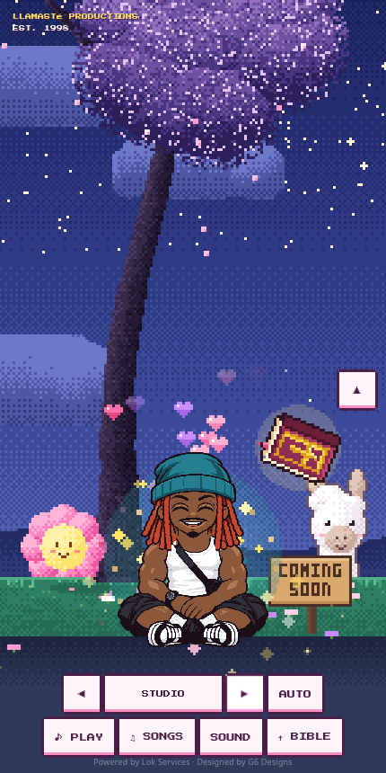
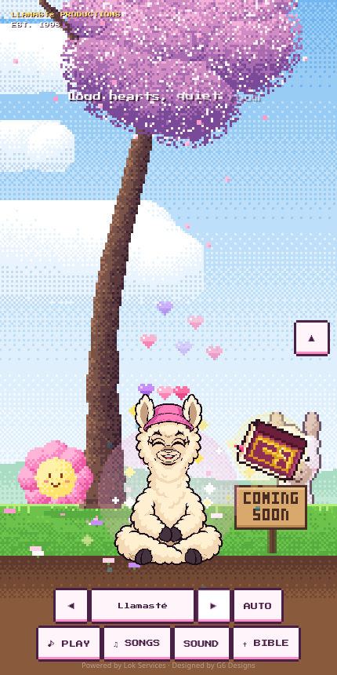

Local page candidate · front-facing, cross-legged · registered illustrated layers







Chromium 430×860 viewport captures. Approved art remains layered for head, eyes, hair, hats and accessories. No deployment.